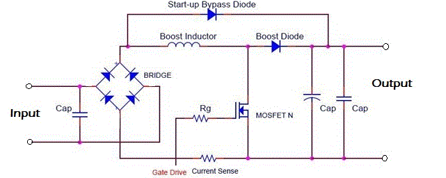

Power factor correction circuit is a common electronic circuit which is used to rectify and adjust the power factor for low voltage applications. Capacitor is the most vital element for this circuit. Because correcting the power factor generally refers to compensate the power against the inductive load current, and balance it to unity position. A simple power factor correction circuit is shown in the figure.

The input terminals transmit the power into the circuit, and a capacitor is connected across it, which is the primary filter of the circuit. Then the power is subjected to a diode filter, which rectifies the current. Boost inductor enhances the overall current gain, which is further sensed by a current sensor device. After that a MOSFET is connected across the lines, and a capacitor is also connected with it. The start up bypass diode is able to transmit the current into the load, through a capacitor. This type of arrangement is pre installed with power factor correction circuit. The interesting thing is, a basic unit of this circuit is capacitor. In large scale applications, power factor correction circuit refers to a series connection of high voltage capacitors. This arrangement acts like reactive power generator, and helps to maintain the power factor unity. Low voltage capacitors are used for the same purpose in LV applications.
For an example of Switch Mode Power Supply(SMPS).
 by
by